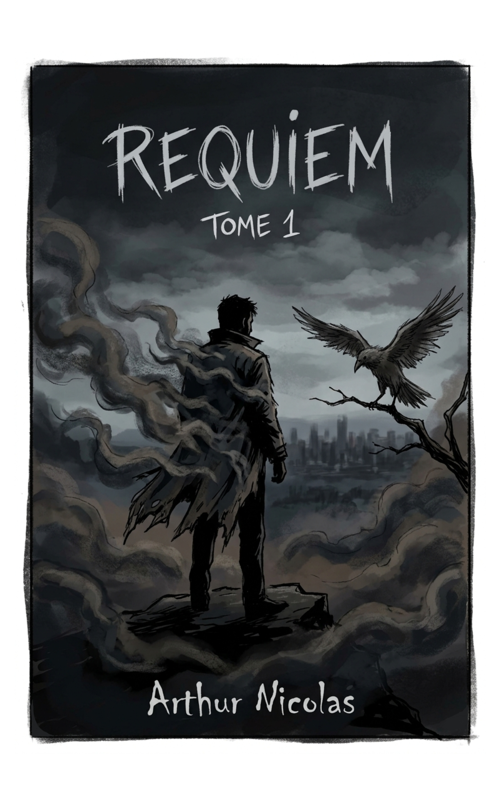

Gothique urbain
Pluie, verticalité, usines mortes, institutions pourries et ruelles qui semblent absorber ceux qui les traversent.
Auteur · Dark fantasy · Thriller gothique
Des villes malades, des personnages imparfaits et des histoires où le fantastique ne cache jamais la violence du réel : il la révèle.

La Saga des Ombres · Tome I
Dix ans après le meurtre de ses parents, Thomas Gray, justicier spectral né d'un pacte infernal, enquête avec la journaliste Stella Frost sur des crimes qui relient la pègre, la mairie et les fondations occultes de Ravenscrow.
Ravenscrow est une métropole fictive des West Midlands où les flèches gothiques, les usines mortes, les quartiers pauvres et les palais municipaux coexistent sous une pluie presque permanente. Dix ans avant le début du roman, Thomas Gray découvre ses parents massacrés par Oblivion. Dévasté, il accepte un pacte avec Samaël et devient Requiem, une silhouette de fumée noire capable de traquer les criminels avec une violence surhumaine.
En 2022, une série de meurtres rituels le ramène au cœur de la ville. La piste conduit à Silas Kane, seigneur du crime pratiquement intouchable, tandis que Stella Frost, journaliste au Raven's Chronicles, remonte la même conspiration par les archives, les témoins et les institutions. Leur alliance révèle bientôt que la pègre, la mairie et l'histoire même de Ravenscrow reposent sur une architecture occulte ancienne.
À mesure que Thomas et Stella se rapprochent, le justicier découvre la possibilité d'une vie qui ne serait plus entièrement gouvernée par la vengeance. Mais la ville se referme autour d'eux : corruption politique, fanatisme, pactes infernaux et portes entre les mondes convergent vers un même piège.
Lorsque Stella est enlevée pour servir de sacrifice, Thomas doit choisir ce que signifie réellement être Requiem. Pour la première fois, il n'utilise pas son pouvoir afin de venger les morts, mais pour sauver une vivante. La victoire qu'il arrache à Ravenscrow referme une porte… et en ouvre une autre, bien plus vaste.
« Un thriller gothique qui bascule progressivement dans la dark fantasy, l'horreur cosmique et l'apocalypse sans perdre son moteur intime. »
La Saga des Ombres
Ravenscrow n'est pas un simple décor. Ses rues, ses institutions et ses fantômes agissent sur les personnages autant qu'ils agissent sur elle.
Pluie, verticalité, usines mortes, institutions pourries et ruelles qui semblent absorber ceux qui les traversent.
Le surnaturel ne remplace jamais le traumatisme. Il lui donne un visage, une voix et parfois des ailes.
La question n'est pas seulement de vaincre le monstre, mais de savoir ce qu'on accepte de devenir pour y parvenir.
Du polar gothique à l'apocalypse politique et cosmique, la saga change d'échelle sans abandonner son cœur humain.
Podcast
La réalité du livre derrière la vitrine.
Parcours d'auteurs, premiers romans, maisons d'édition, visibilité, argent, galères et coulisses : un podcast qui préfère regarder la fabrication du livre là où elle est rarement racontée.
Contact & actualités
Édition, presse, podcast, rencontres ou simplement suivre les prochains projets.